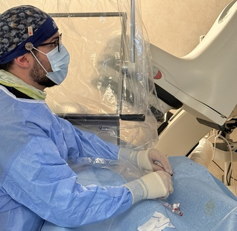

Partire dal quadro clinico.
Sintomi, storia clinica, terapia e aspettative del paziente definiscono il problema da affrontare.
Cardiologia clinica e interventistica
Sintomi, storia clinica ed esami acquistano senso solo insieme. L'obiettivo della visita è capire cosa serve, cosa non serve e quale scelta è più appropriata per il bisogno assistenziale di ciascuno.
Le prestazioni ospedaliere si prenotano attraverso i canali CUP istituzionali.

Approccio clinico
Una buona valutazione non somma esami. Costruisce un ragionamento.
Sintomi, storia clinica, terapia e aspettative del paziente definiscono il problema da affrontare.
Un test è utile quando può chiarire il quadro o cambiare una decisione clinicamente e prognosticamente rilevante.
Benefici, rischi, limiti e alternative vanno resi comprensibili prima di decidere il percorso.
Da quale domanda partiamo?
La valutazione parte dal problema da chiarire, non dall’esame da eseguire.
Dolore o fastidio al torace, affanno, palpitazioni, perdita di coscienza o ridotta tolleranza allo sforzo possono avere cause diverse. Il primo passo è ricostruire come sono comparsi, quanto durano, cosa li provoca e quali altri sintomi li accompagnano.
Pressione, colesterolo, diabete, fumo, peso, attività fisica e familiarità non raccontano la stessa storia se considerati isolatamente. Valutarli insieme permette di capire quali fattori pesano di più e dove intervenire può offrire il beneficio maggiore.
Una diagnosi già nota non rende automatici esami e controlli. Sintomi, terapia, andamento nel tempo e risultati precedenti aiutano a capire cosa è stabile, cosa è cambiato e quando è necessario modificare il percorso.
La visita orienta il percorso di cura e gli esami sono decisivi solo quando rispondono alla domanda giusta.
Per mettere ordine tra sintomi, fattori di rischio, terapie e storia cardiovascolare.
Perché può servirePer valutare struttura, funzione cardiaca e valvole quando queste informazioni possono cambiare l'orientamento diagnostico e ridefinire il rischio.
Cosa ci permette di capirePer studiare l'emodinamica cardiaca e analizzare il circolo coronarico.
Come si inserisce nel percorsoPrevenzione cardiovascolare
Pressione, colesterolo, diabete, fumo, peso, attività fisica e familiarità acquistano significato quando vengono considerati insieme.
L’obiettivo è definire priorità concrete e intervenire dove il beneficio atteso è maggiore.
Continuità della cura
Una decisione clinica ha valore quando si traduce in un percorso che può essere seguito nel tempo.
Prima di lasciare l’ambulatorio devono essere chiari la terapia, gli obiettivi, i controlli e i segnali che richiedono una rivalutazione.
Prima della visita
Non serve portare tutto. Serve portare ciò che permette di ricostruire bene la propria storia clinica.
Farmaci, dosi e frequenza di assunzione.
Lettere di dimissione ed esami che documentano eventi o cambiamenti importanti.
Portali con te. Non eseguirne di nuovi solo per arrivare “preparato”, salvo indicazione medica.
Annota cosa è cambiato, quando è iniziato e quali dubbi vuoi chiarire.
Informazioni pratiche
Le prestazioni ospedaliere si prenotano tramite CUP. I contatti diretti servono per chiarimenti organizzativi.